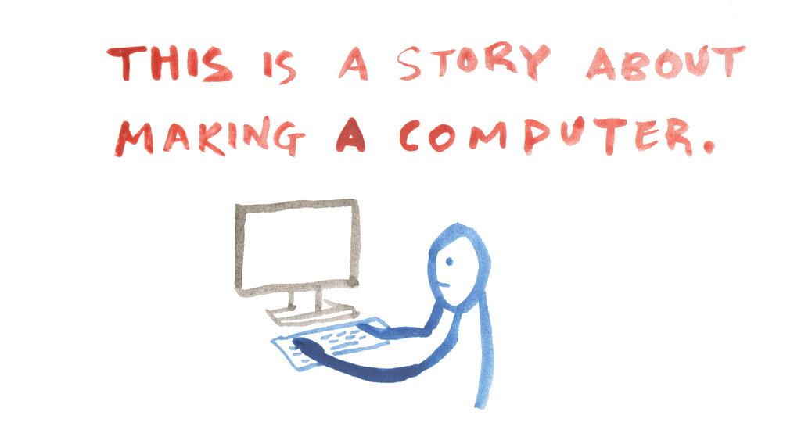

Laurel Schwulst: My Website Is A Shifting House
(WEEK 1)
What is a website? We explore into what defines handmade web and how we build a website from nothing. This article dives into related terms, metaphors, and discussions in building a world around your site. Schwulst also weighs on the importance of creating an individual space with practices and collections, especially in the growing corporate climate of web design software in our evolving technologies. Some great bird imagery is displayed as well in efforts to educate ourselves on varying topics.

Ursula K. Le Guin: A Rant On Technology
(WEEK 1)
Guin dives into the "hard" and "soft" descriptors used in the practice of science fiction. We begin with the argument that all science fiction is technologicaal, in the hopes of providing a point of view towards desensitization of convient processes versus handmade processes. One quote to take away from this piece from Guin states: "Technology is the active human interface with the material world."

J.R. Carpenter: A Handmade Web
(WEEK 2)
This writing dives into the definition of "handmade web," simple tools, and the desensitization of website building. Beginning in the 1990's website building was a "rich, personal, slow, and under construction" process. The significance of knowing how a website works has been less common knowledge for the public based on bigger, private companies making softwares more complex and simplified. This begins Carpenter's discussion of importance of representing and acknowledging individualized entities that create web from scratch, as "it becomes an increasingly radical act to hand-code and self publish experimental web art and writing projects."

Taeyoon Choi: Hello, World!
(WEEK 4)
This piece goes into topics around the makers of technology, their impact, and how to build computers from scratch. Taeyoon uses a beautiful combination of watercolor illustrations and writings to visualize the language of computer making and the history behind it. Theres a repeated discussion into the militarization of technology and the mass production in the computing industry. We begin to uncover the origins of computers: how they were human computed and based on female labor. A question that ends off chapter one but begins to introduce the rest of their essay goes, "Are cities computers for humans?"
